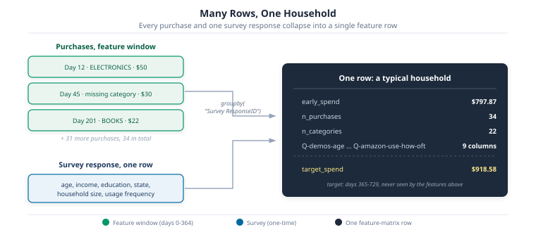

In November 2019, a single-person household in Alabama, reporting an income between $25,000 and $49,999, bought a 65-inch Samsung 4K television, a PlayStation 4 Pro, a Microsoft Surface tablet, an Apple Watch, a GoPro camera bundle, a trampoline, and a kayak. Fifty-eight items, spread across four days. The total came to $11,709.16.
For the three months before that, the same household had spent an average of $49.47 a month. Across the roughly four years this account appears in the data, its lifetime total is $16,237.77. One month accounts for 72 percent of everything it has ever bought on the platform.
Nothing in this household’s survey answers, age bracket, income, education, state, explains it. There’s no flag for it and no obvious trigger. It’s one row among 1.85 million, sitting in the data whether or not anyone thinks to look for it.
Here, you use it on a dataset nobody cleaned for teaching: five years of real Amazon purchase histories from 5,027 U.S. households, linked to a demographic and lifestyle survey each household completed once. The household above is what that data looks like up close. It’s also the first of seven case studies built the same way, one real dataset and one real business question each, so the habit you build in this chapter (reason through the ask, prototype in the notebook, promote what works into a tested module) is the one the other six will follow.
NoteLearning objectives
By the end of this chapter you will be able to:
#
Skill
Covered in
1
Turn a vague business ask into a five-component ML specification through your own follow-up questions
Sec. 1
2
Build a tested, cached data-download utility instead of a one-off script
Sec. 2
3
Let exploratory checks be driven by the spec card instead of habit
Sec. 3
4
Engineer temporally-safe features and catch a leakage bug with a purpose-built test
Sec. 4
5
Demonstrate the Evaluation-to-Feature-Engineering feedback loop with an honest ablation
Sec. 5
6
Diagnose a model with a learning curve and permutation importance
Sec. 6
7
Attach a back-of-envelope dollar value to a model’s metric before calling it done
Sec. 7
1. Problem framing
Here’s the request, exactly as it would actually arrive. You’re the data scientist on a retention team at a company sitting on data like this, purchase histories linked to a demographic survey, for a panel of customers. Your manager stops by your desk and says:
“We want to know which customers are worth investing more in.”
That’s the whole brief. No target variable, no metric, no mention of a model. This is what a real ask sounds like, and your job right now is to figure out what it actually means, not to open a notebook.
What does “worth investing in” even mean?
Before you touch a single file, you need to pull that sentence apart. It’s collapsing at least four different problems into one, and they are not interchangeable:
Customers who already spend the most. A ranking of the past, nothing predictive about it.
Customers likely to spend more going forward. A forecast.
Customers likely to leave if nobody intervenes. A churn problem.
Customers who look like existing high spenders but haven’t been identified yet. A segmentation problem.
Each one is a legitimate data science problem. Each one produces a different target variable, a different model, and a different action the business takes on your output. Guess wrong here and you could spend six months building the right system for the wrong question.
You go back and ask a follow-up question. It turns out “worth investing in” means deciding who gets priority for a loyalty program with a fixed, limited budget. The team wants customers ranked by how much they’re likely to spend going forward, using the demographic and behavioural data already on file, before that spending happens. Not a scoreboard of who has already spent the most.
That answer resolves the first fork: this is a forecast of future value, not a description of past value, which rules out simply sorting by historical total. It also starts pinning down Chapter 30’s five-component spec, one piece at a time, following wherever your own follow-up questions lead next:
Activity 1: write the spec card before reading further
Using Chapter 30’s five-component spec (target variable, task type and paradigm, success metric, acceptable threshold, data specification), write your own answer for this problem before reading the discussion below. Compare where you landed once you get there. If your target variable differs, that’s fine, it’s the kind of decision Chapter 30’s Pro Tip already warned about: agree it with the stakeholder who will actually use the model, because a model optimised toward the wrong objective will hit that objective and still miss the point.
Target variable. Not last month’s spend, what you’re predicting is next year’s. You still need a window, a month, a year, a lifetime span all answer the question differently, and the right one depends on how often the loyalty program actually reallocates its budget. If the business revisits the list annually, that settles it: a household’s spend over the coming twelve months.
Task type and paradigm. You’re predicting a number from labelled historical examples where the outcome is already known. That’s regression, supervised.
Success metric. The team isn’t going to read predictions one row at a time, they’re going to act on a ranked list. So the metric that matters is whether your model orders households correctly relative to each other, and whether the top decile it flags genuinely outspends everyone else. Mean absolute error is still worth tracking, mostly as a sanity check that the numbers themselves aren’t nonsense.
Acceptable threshold. A model that can’t beat “assume everyone spends the average” isn’t worth shipping. Here’s the real bar: households you rank in the top decile need to outspend a randomly chosen household by enough that the loyalty program’s cost per member actually pays for itself, a number the business has to hand you, you can’t derive it from the data alone.
Data specification. One demographic and lifestyle survey per household, answered once, and multi-year purchase history at the individual-transaction level, for 5,027 households.
NoteThe resolved spec card
Component
Specification
Target variable
Household’s total spend over the coming 12 months
Task type and paradigm
Regression, supervised
Success metric
Rank quality (does the top decile of predicted spend actually outspend the rest), MAE as a secondary check
Acceptable threshold
Top-decile households must outspend a randomly chosen household by a margin the loyalty program’s budget can justify
Data specification
One-time demographic and lifestyle survey plus multi-year, transaction-level purchase history, 5,027 U.S. households
That’s the spec, and it took five follow-up questions to get there, not a target variable declared in the first paragraph. Every one of those questions is something a real stakeholder conversation would actually raise, and you’ll ask versions of them again in every case study that follows.
Next: turning this into something durable enough that the rest of the project can’t quietly drift from it, a Pydantic object, not a paragraph you could reinterpret three sections from now.
Making the decision durable
Right now the spec card is a table in a notebook. Nothing stops the next person, or you, in three weeks, from reading “predicted spend” and quietly building a model for last month’s spend instead, because nothing enforces which one was actually decided. A Pydantic object does. Once settings.spec.target_variable is a real attribute, every later section imports it instead of re-reading a paragraph and hoping it remembers correctly.
This is also where the practical decisions live, the ones that don’t belong in a business spec but still need a fixed answer somewhere: which Harvard Dataverse files this pulls from, where they get cached, and which survey questions never make it into a feature, no matter how predictive they turn out to be.
from pathlib import Pathfrom pydantic import BaseModelfrom pydantic_settings import BaseSettings, SettingsConfigDictclass SpecCard(BaseModel):"""The five-component spec resolved above, kept as data, not prose.""" target_variable: str="Household's total spend over the coming 12 months" task_type: str="Regression, supervised" success_metric: str="Rank quality (top-decile lift over random), MAE as a secondary check" acceptable_threshold: str= ("Top-decile households must outspend a random household by a margin the loyalty program's budget can justify" ) data_specification: str= ("One-time demographic and lifestyle survey plus multi-year, ""transaction-level purchase history, 5,027 U.S. households" )class SpendRegressionSettings(BaseSettings):"""Paths, source data, and policy decisions for this case study.""" model_config = SettingsConfigDict(env_file=".env", env_prefix="SPEND_", case_sensitive=False) spec: SpecCard = SpecCard() data_dir: Path = Path("data") dataverse_base_url: str="https://dataverse.harvard.edu/api/access/datafile" purchases_file_id: int=7616235# amazon-purchases.csv, ~298.5 MB survey_file_id: int=7616231# survey.csv, tab-separated despite the .csv extension random_seed: int=42 excluded_survey_columns: list[str] = ["Q-substance-use-cigarettes","Q-substance-use-marijuana","Q-substance-use-alcohol","Q-personal-diabetes","Q-personal-wheelchair","Q-sexual-orientation", ]settings = SpendRegressionSettings()settings.spec.target_variable
"Household's total spend over the coming 12 months"
from great_tables import GT, md as gt_mdimport pandas as pdfrom ark.plot.gt_style import themed_gtLABELS = {"target_variable": "Target variable","task_type": "Task type and paradigm","success_metric": "Success metric","acceptable_threshold": "Acceptable threshold","data_specification": "Data specification",}spec_df = pd.DataFrame([{"Component": LABELS[k], "Specification": v} for k, v in settings.spec.model_dump().items()])themed_gt(GT(spec_df), n_rows=len(spec_df)).tab_header( title=gt_md("**The spec card, as code**"), subtitle="Generated from settings.spec, not retyped from the table above",)
The spec card, as code
Generated from settings.spec, not retyped from the table above
Component
Specification
Target variable
Household's total spend over the coming 12 months
Task type and paradigm
Regression, supervised
Success metric
Rank quality (top-decile lift over random), MAE as a secondary check
Acceptable threshold
Top-decile households must outspend a random household by a margin the loyalty program's budget can justify
Data specification
One-time demographic and lifestyle survey plus multi-year, transaction-level purchase history, 5,027 U.S. households
Same five rows as the resolved spec card earlier in this chapter. The difference is where they came from: that one was a markdown table anyone could edit without noticing, this one is read straight off the object the rest of the pipeline will actually import.
This is what “promoted” means, and it’s worth being explicit since nothing here does it automatically. ark isn’t a third-party library, it’s this book’s own package, the same one behind ark.plot.theme and ark.plot.gt_style every chart and table in this chapter already uses. ark/case_studies/spend_regression/ is a new corner of that same package, created for this case study specifically, and every future one will get its own folder next to it. Promoting code means exactly what it sounds like: once something written in a notebook has been tried and works, a person opens the real file, ark/case_studies/spend_regression/config.py in this case, and puts the working code there by hand. There’s no button for it, and nothing enforces that the notebook and the file stay in sync except doing it carefully each time, which is what the rest of this chapter does out loud, one function at a time.
The two classes above now live in that file, word for word. Proving that means checking the values survive the move, then using the real, imported class for everything from here on, not the copy defined above:
No test file for this one. Pydantic already validates the structure on construction, and there’s no logic here yet worth a regression test, just decisions. That changes at the next step: downloading the actual data is where something can genuinely go wrong (a bad URL, a schema drift, a file Harvard renames), and where this chapter writes its first real test.
2. Data collection
The data specification says a one-time survey plus multi-year purchase history, for 5,027 households, hosted on Harvard Dataverse. Downloading a file isn’t a data science problem, it’s infrastructure, so you’re not building it by hand in this notebook. It’s a utility: written once, tested, imported everywhere it’s needed, the same way you’d reach for a library function instead of re-deriving it.
from ark.case_studies.spend_regression.data import load_survey
Behind that import is download_dataverse_file, which handles the parts that have nothing to do with this dataset specifically and everything to do with downloading files correctly:
Idempotent. You won’t wait through a 300 MB download twice, once a file is on disk, this skips the network entirely.
Streamed in chunks. Not read into memory in one call, so a large file doesn’t need to fit in RAM before it’s even written to disk.
HTTPS-only, on purpose. It refuses any URL that isn’t https:// before opening a connection. Dataverse would never hand back anything else, but you shouldn’t write a function that fetches arbitrary URLs and quietly trusts whatever string it’s given.
A plain header fixes a confusing error. Dataverse’s server rejects Python’s default urllib user agent with a 403, even though the same URL works fine in curl or a browser. You send a normal-looking header instead, one line, and the “broken API” turns out to be a request that just looked wrong.
None of that is specific to spend prediction. You’re looking at code worth writing once, testing, and never thinking about again. That’s why it gets its own test, next.
This is also the repo’s first real test file, tests/case_studies/test_spend_regression.py, three tests that never touch the network: one confirms the cache short-circuit works without a real download, one confirms the HTTPS guard rejects a bad scheme, one confirms the tab-separator handling on a small fixture file. Run it yourself here rather than take it on faith:
!uv run pytest ../../tests/case_studies/test_spend_regression.py -v --override-ini=addopts=""
]9;4;3;\============================= test session starts ==============================
platform linux -- Python 3.14.4, pytest-9.0.0, pluggy-1.6.0 -- /home/runner/work/ds-mlops-path/ds-mlops-path/.venv/bin/python
cachedir: .pytest_cache
rootdir: /home/runner/work/ds-mlops-path/ds-mlops-path
configfile: pyproject.toml
plugins: anyio-4.11.0, typeguard-4.5.2
collecting ...
collecting 10 items
collected 10 items
../../tests/case_studies/test_spend_regression.py::test_download_dataverse_file_returns_cached_path_without_network ]9;4;1;0\PASSED [ 10%]
../../tests/case_studies/test_spend_regression.py::test_download_dataverse_file_rejects_non_https_urls ]9;4;1;10\PASSED [ 20%]
../../tests/case_studies/test_spend_regression.py::test_load_survey_parses_tab_separated_data ]9;4;1;20\PASSED [ 30%]
../../tests/case_studies/test_spend_regression.py::test_build_feature_matrix_drops_households_without_a_target ]9;4;1;30\PASSED [ 40%]
../../tests/case_studies/test_spend_regression.py::test_build_feature_matrix_computes_features_only_from_the_feature_window ]9;4;1;40\PASSED [ 50%]
../../tests/case_studies/test_spend_regression.py::test_build_feature_matrix_fills_missing_category_before_counting ]9;4;1;50\PASSED [ 60%]
../../tests/case_studies/test_spend_regression.py::test_build_feature_matrix_rejects_a_sensitive_demographic_column ]9;4;1;60\PASSED [ 70%]
../../tests/case_studies/test_spend_regression.py::test_feature_matrix_schema_rejects_negative_spend ]9;4;1;70\PASSED [ 80%]
../../tests/case_studies/test_spend_regression.py::test_top_decile_lift_is_one_for_a_constant_prediction ]9;4;1;80\PASSED [ 90%]
../../tests/case_studies/test_spend_regression.py::test_estimate_incremental_value_scales_with_conversion_rate ]9;4;1;90\PASSED [100%]]9;4;0;\
=============================== warnings summary ===============================
../../.venv/lib/python3.14/site-packages/pandera/_pandas_deprecated.py:154
/home/runner/work/ds-mlops-path/ds-mlops-path/.venv/lib/python3.14/site-packages/pandera/_pandas_deprecated.py:154: FutureWarning: Importing pandas-specific classes and functions from the
top-level pandera module will be **removed in a future version of pandera**.
If you're using pandera to validate pandas objects, we highly recommend updating
your import:
# old import import pandera as pa
# new import import pandera.pandas as pa ```
If you’re using pandera to validate objects from other compatible libraries like pyspark or polars, see the supported libraries section of the documentation for more information on how to import pandera:
:::
:::
:::
### Loading the survey
Before loading it: `survey.csv` is tab-separated. Nothing about the extension warns you, and `pd.read_csv` with default settings would silently parse it as one giant column instead of raising an error, a worse failure than a crash because it looks like it worked. `load_survey` already accounts for this.
::: {#23 .cell execution_count=6}
``` {.python .cell-code}
survey_df = load_survey(settings)
themed_gt(GT(survey_df.head(5)), n_rows=5).tab_header(
title=gt_md("**First 5 survey responses**"),
subtitle=f"{survey_df.shape[1]} columns per household",
)
First 5 survey responses
23 columns per household
Survey ResponseID
Q-demos-age
Q-demos-hispanic
Q-demos-race
Q-demos-education
Q-demos-income
Q-demos-gender
Q-sexual-orientation
Q-demos-state
Q-amazon-use-howmany
Q-amazon-use-hh-size
Q-amazon-use-how-oft
Q-substance-use-cigarettes
Q-substance-use-marijuana
Q-substance-use-alcohol
Q-personal-diabetes
Q-personal-wheelchair
Q-life-changes
Q-sell-YOUR-data
Q-sell-consumer-data
Q-small-biz-use
Q-census-use
Q-research-society
R_1ou69fj4DQGsVcp
35 - 44 years
No
Black or African American
High school diploma or GED
$25,000 - $49,999
Female
heterosexual (straight)
Iowa
2
2
Less than 5 times per month
Yes
No
Yes
No
No
Lost a job
No
No
No
No
No
R_2UbJL30HRjK1sdD
45 - 54 years
No
White or Caucasian
High school diploma or GED
$100,000 - $149,999
Male
heterosexual (straight)
Ohio
2
4+
Less than 5 times per month
No
No
No
No
No
No
No
No
No
Yes
R_UPXamGKtmf4RVIZ
25 - 34 years
No
White or Caucasian
High school diploma or GED
$25,000 - $49,999
Male
heterosexual (straight)
Arkansas
1 (just me!)
2
Less than 5 times per month
No
No
No
Yes
No
No
No
No
No
Yes
R_2dYk5auG9Fv5Qve
35 - 44 years
Yes
White or Caucasian
Graduate or professional degree (MA, MS, MBA, PhD, JD, MD, DDS, etc)
$50,000 - $74,999
Male
heterosexual (straight)
Tennessee
1 (just me!)
1 (just me!)
Less than 5 times per month
No
No
No
No
No
No
No
No
No
No
R_2aP0GyIR66gSTiR
25 - 34 years
No
White or Caucasian
High school diploma or GED
$50,000 - $74,999
Male
heterosexual (straight)
Virginia
2
3
Less than 5 times per month
No
No
Yes
No
No
No
Yes if consumers get part of the profit
I don't know
No
No
Scroll through the columns above and you’ll find Q-demos-age, Q-demos-income, Q-demos-education sitting a few columns away from Q-substance-use-cigarettes, Q-personal-diabetes, Q-personal-wheelchair, and Q-sexual-orientation. One survey, one consent form, questions about spending habits next to questions that have nothing to do with them. excluded_survey_columns in config.py is what keeps the second group out of the feature set, whether they’re worth excluding on predictive grounds is a question for EDA, next.
3. EDA
Chapter 16’s Datasaurus Dozen made this point once already: never trust a summary statistic you haven’t plotted. You’re about to load 1.85 million purchase records, the largest dataset this book has put in front of you, and the pull is to jump straight to a model. Look first.
Activity 2: decide what EDA has to answer before you run any of it
Go back to the resolved spec card: target variable, task type, success metric, threshold, data spec. Before reading further, write down two or three things about this data you’d want to check before building a single feature, and why each one matters given that specific spec, not “what EDA usually covers.” Compare your list against the four checks below.
NoteWhat this section actually checks, and why
This section checks four things, each one earns its place because of something in the spec card, not because it’s customary EDA:
The shape of household spend. The target itself. If it’s skewed enough, a plain mean baseline misleads you and the choice of success metric stops being academic.
Whether spend changed by year. The target is a forward-looking number. If a household’s history looks different depending on when it was collected, that’s a fact any feature you build has to respect.
Missingness in Category and Title. Section 4 needs a category for every row. A blank one has to be handled on purpose, not discovered as a crash.
Whether the excluded survey columns actually cost you anything. Section 2 left this open. It’s answerable with the same data you’re about to load.
If your list looked different, that’s fine, the point isn’t to predict this exact list, it’s to arrive at EDA already knowing what question you’re trying to answer instead of poking at charts until something looks interesting.
Purchases are logged per line item, one row per thing bought. To see how spend behaves, you need one row per household first.
hh_total = purchases_df.groupby("Survey ResponseID")["total"].sum().rename("total_spend").reset_index()( ggplot(hh_total, aes(x="total_spend"))+ geom_bar(stat="bin", fill=INFO, alpha=0.85, bins=60)+ geom_vline(xintercept=16237.77, color=DANGER, linetype="dashed", size=1)+ labs( title="Household lifetime spend", subtitle="Dashed line: the household from the opening of this chapter, 85th percentile", x="Total spend ($)", y="Households", )+ modern_theme(grid=True))
Median household spend across the whole dataset is $5,706.99. The mean is $8,763.40, more than half again as much, which is what you’d expect from a right-skewed distribution: most households cluster well below the mean, and a smaller group of very high spenders pulls it upward. You can see where the household from the opening lands: the 85th percentile of lifetime spend, comfortably above average, but nowhere near the top. Whatever happened in November 2019 wasn’t a top spender having a big month. It was an ordinary-to-good household having an extraordinary one.
This is also why Section 1’s success metric was rank quality, not raw error. A skew this wide means a handful of households can swing a mean-based metric like MAE far more than they should, while barely moving where a household sits relative to the rest. You picked the metric before seeing this chart. The chart is why that choice holds up.
The COVID-era shift
The household-level total hides when spending happened. Aggregate by year instead and you get a shape most of the developed world lived through directly.
Mean annual spend rises every year from 2018 ($1,286) through 2021 ($2,287), nearly doubling, then holds roughly flat in 2022 ($2,204). None of this needed a model, a groupby and a chart found it. What it means for you as you build a spend-prediction model matters more: a household’s 2018 history looks nothing like the same household’s 2021 history, so the features you build in Section 4 need to account for when the data was collected, not only what was bought.
Missingness
Category and Title are each missing on about 4.8% of rows, and it’s almost always the same rows: 88,832 of the 89,458 records missing Category are also missing Title, over 99%. That’s not data-entry noise scattered evenly across the file, you’re looking at one class of purchase record, probably a discontinued listing or a third-party item Amazon never fully catalogued, that’s incomplete in a consistent way.
missing_df = pd.DataFrame( {"Column": ["Category", "Title"],"Missing (count)": [purchases_df["Category"].isna().sum(), purchases_df["Title"].isna().sum()],"Missing (%)": [round(purchases_df["Category"].isna().mean() *100, 2),round(purchases_df["Title"].isna().mean() *100, 2), ], })themed_gt(GT(missing_df), n_rows=len(missing_df)).tab_header( title=gt_md("**Missing values**"), subtitle="Category and Title are missing on almost exactly the same rows",)
Missing values
Category and Title are missing on almost exactly the same rows
Column
Missing (count)
Missing (%)
Category
89458
4.83
Title
89740
4.85
You need a category for every row regardless of whether the source data has one. Section 4 handles that.
Does any of this actually predict spend?
Section 2 left one question open for you: whether the columns config.py excludes, substance use, disability, sexual orientation, would have predicted spend better than the demographic columns that stayed in.
Activity 3: guess before you check
Before running the next cell, write down a guess for each of the six excluded columns: do you expect smoking status, marijuana use, alcohol use, diabetes, wheelchair use, and sexual orientation to show a real gap in mean spend, or none worth mentioning? You have one piece of evidence already, the spec card’s data specification says nothing about health or identity driving spend, which is exactly the kind of assumption worth checking rather than trusting.
Checking whether the exclusion decision costs any real predictive power
Column
Baseline
Comparison
Gap
Q-substance-use-cigarettes
No ($9,194.53)
Yes ($6,920.18)
-24.74%
Q-substance-use-marijuana
No ($9,122.72)
Yes ($7,985.91)
-12.46%
Q-substance-use-alcohol
No ($8,734.65)
Yes ($8,907.63)
+1.98%
Q-personal-diabetes
No ($8,703.25)
Yes ($9,179.33)
+5.47%
Q-personal-wheelchair
No ($8,769.30)
Yes ($8,774.99)
+0.06%
Q-sexual-orientation
heterosexual (straight) ($9,110.47)
LGBTQ+ ($7,566.76)
-16.94%
If you guessed “no meaningful gap anywhere,” you were half right, and the half where you were wrong is the more important half. Three of the six show almost no gap: alcohol use, diabetes, and using a wheelchair. Two show a real one: households where someone smokes cigarettes or uses marijuana spend noticeably less, not more, and LGBTQ+ households spend about 17% less than heterosexual ones. You’re not looking at rounding errors.
Which makes your exclusion decision more interesting, not less defensible. A real correlation between sexual orientation and spend doesn’t mean sexual orientation causes spend, it almost certainly reflects something else these groups differ on that already has its own column, income, age, region, and a demographic proxy can pick up someone else’s signal without you gaining anything a more direct feature wouldn’t explain better. Even if it were a genuinely independent predictor, using a protected characteristic to price or prioritise a customer carries consequences beyond model accuracy, and Chapter 30’s spec card never asked what’s technically permitted to use. It asked what the acceptable threshold and success metric are, not how to hit them by any means available. excluded_survey_columns was the right call before you had this table. Now you have evidence for it, not just a policy.
Section 4 turns all of this, the skew, the year effect, the missingness, into features a model can actually use.
4. Feature engineering
The spec card’s target is a household’s spend over the coming 12 months. That word, coming, is the trap. Build a “purchase frequency” feature from a household’s entire multi-year history, then predict “future” spend over a window that history already includes, and you’ve let the target leak into the input. The model would look uncannily accurate in this notebook and fall apart the moment you pointed it at a real future period, the exact failure Chapter 30 built its whole workflow around.
Activity 4: find the leak before it’s built
A household has 50 months of purchase history. Say you compute “average monthly spend” as a feature and “total spend” as the target, both from that household’s entire history. Every number would be technically correct. Write down what’s wrong with the resulting model anyway, then compare your answer against the design below.
NoteThe temporal design
Every feature has to come from data available before the target period starts, the same rule Chapter 30 applied to train/test splits, just applied one level earlier, to how the target itself gets defined.
For each household: the first 12 months of its history become the feature window (demographics plus early purchase behaviour), and the next 12 months become the target window (the number you’re actually predicting). A household with 50 months of history uses only its first 24, months 25 onward are simply never touched by this model. That’s not wasted data, it’s the difference between a feature and a leak.
Not every household has a full year of purchases on both sides of that boundary. Checking directly: 4,778 of 5,027 households (95%) have at least one purchase in both windows and are usable. The other 5% are dropped, not imputed, a household that stopped buying before month 13 doesn’t have a “coming 12 months” to predict.
Here’s the shape of what the rest of this section builds toward, before any code: many purchase rows plus one survey row, collapsing into a single feature row per household.

Many purchase rows and one survey response collapsing into a single feature-matrix row for one household: early_spend, n_purchases, n_categories, nine demographic columns, and target_spend drawn from a separate, later time window.
The target: next-12-months spend
Every household’s clock starts at its own first purchase, not a calendar date, two households can both be “in year one” while being years apart on the actual timeline. Days since first purchase is the anchor everything else is measured against.
Activity 5: keep only the households you can actually score
feature_window right now includes every household that ever made a purchase, but household_target only has an entry for the 4,778 with activity in months 13-24. Filter feature_window down to only the households present in household_target’s index, before building a single feature from it:
feature_window = feature_window[...]
feature_window = feature_window[feature_window["Survey ResponseID"].isin(household_target.index)]target_df = pd.DataFrame( {"min": [household_target.min()],"median": [household_target.median()],"mean": [household_target.mean()],"max": [household_target.max()],"n households": [household_target.shape[0]], }).round(2)themed_gt(GT(target_df), n_rows=1).tab_header( title=gt_md("**Target: spend in months 13-24**"), subtitle="4,778 households, the same right skew as Section 3's lifetime-spend chart",)
Target: spend in months 13-24
4,778 households, the same right skew as Section 3's lifetime-spend chart
min
median
mean
max
n households
2.87
918.58
1534.5
22116.1
4778
Behavioural features from the feature window
Three numbers per household, all computed only from the first 365 days, the window you already committed to: how much they spent, how often they bought, and how many different kinds of things.
That ran without error, which is exactly the problem.
Common Mistake: nunique() silently drops missing values
Series.nunique() excludes NaN by default. Section 3 found that Category is missing on about 4.8% of rows, not an edge case, a purchase with no category recorded is still a real purchase. A household whose only “unusual” item was one of those missing-category rows gets undercounted by exactly one category, and nothing in the output tells you it happened.
Activity 6: fix the undercount
Fill the missing values in Category with a placeholder before counting, so a missing category becomes its own countable group instead of vanishing:
3,906 of 4,778 households, over 80%, were undercounted by the naive version. Not a rare edge case, the default behaviour of a pandas method almost everyone reaches for without checking.
purchase_features = pd.concat([early_spend, n_purchases, fixed_categories], axis=1)themed_gt(GT(purchase_features.describe().round(2).reset_index()), n_rows=8).tab_header( title=gt_md("**Behavioural features, summary statistics**"), subtitle="4,778 households, computed only from days 0-364",)
Behavioural features, summary statistics
4,778 households, computed only from days 0-364
index
early_spend
n_purchases
n_categories
count
4778.0
4778.0
4778.0
mean
1365.48
56.46
30.9
std
1686.51
70.06
30.0
min
0.1
1.0
1.0
25%
297.92
14.0
9.0
50%
797.87
34.0
22.0
75%
1826.38
73.0
42.0
max
21685.5
822.0
304.0
Adding demographics
survey_df has 23 columns. Six are already in settings.excluded_survey_columns, and several more, life changes, willingness to sell data, whether the respondent works in a small business, are survey-methodology questions, not demographics or lifestyle in any sense the spec card meant. The feature list names exactly what’s relevant, rather than subtracting a blocklist and hoping nothing irrelevant slips through.
That check isn’t decorative. DEMOGRAPHIC_COLUMNS doesn’t currently include anything from the exclusion list, but “currently” is doing the work in that sentence. It fails loudly the moment someone adds Q-sexual-orientation back in without checking, instead of silently training on it.
Every join used how="inner", on purpose. A household missing from purchase_features, demographics, or household_target doesn’t belong in a training set, it belongs nowhere near one, and an inner join drops it rather than filling in a guess.
n_missing = feature_matrix.isna().sum().sum()themed_gt(GT(feature_matrix.head(5).reset_index()), n_rows=5).tab_header( title=gt_md("**Feature matrix, first 5 households**"), subtitle=f"{feature_matrix.shape[0]:,} households x {feature_matrix.shape[1]} columns, {n_missing} missing values",)
Feature matrix, first 5 households
4,778 households x 13 columns, 0 missing values
Survey ResponseID
early_spend
n_purchases
n_categories
Q-demos-age
Q-demos-hispanic
Q-demos-race
Q-demos-education
Q-demos-income
Q-demos-gender
Q-demos-state
Q-amazon-use-hh-size
Q-amazon-use-how-oft
target_spend
R_01vNIayewjIIKMF
1037.79
50
35
35 - 44 years
Yes
Black or African American
Bachelor's degree
$25,000 - $49,999
Male
New Jersey
1 (just me!)
Less than 5 times per month
896.05
R_037XK72IZBJyF69
1585.18
122
75
55 - 64 years
No
White or Caucasian
Bachelor's degree
$25,000 - $49,999
Female
Pennsylvania
2
Less than 5 times per month
1645.38
R_038ZU6kfQ5f89fH
613.74
13
9
25 - 34 years
No
White or Caucasian
High school diploma or GED
$25,000 - $49,999
Male
California
1 (just me!)
Less than 5 times per month
943.9300000000001
R_03aEbghUILs9NxD
316.22
27
20
35 - 44 years
No
White or Caucasian
Bachelor's degree
$50,000 - $74,999
Male
Virginia
4+
Less than 5 times per month
625.92
R_06RZP9pS7kONINr
1237.81
45
33
65 and older
No
White or Caucasian
Bachelor's degree
$75,000 - $99,999
Female
South Dakota
2
More than 10 times per month
1489.54
Promoting it
Same move as Section 1’s config.py: everything above, the temporal windows, the behavioural features, the demographics join, now lives at ark/case_studies/spend_regression/features.py, as build_feature_matrix. It’s joined by a new file, ark/case_studies/spend_regression/schema.py, holding FeatureMatrixSchema, a Pandera check on the way out: no negative spend, no zero purchase counts, every demographic column present. Rebuild from the promoted versions and confirm they match what you built by hand:
FeatureMatrixSchema.validate() passed: all 4,778 rows satisfy every rule
Field(s)
Rule
Rows passing
early_spend, target_spend
float, >= 0
4778
n_purchases, n_categories
int, >= 1
4778
9 demographic columns
present, non-null string
4778
Activity 7: write the test that would have caught the leak
This case study’s entire feature-window argument is only worth something if a future edit can’t quietly break it. Here’s a fixture: household R_a buys $50 and $30 in the feature window (days 0-364) and $100 in the target window (day 397). If someone later changed the window boundary and accidentally let that $100 purchase into the features, what assertion would catch it? Fill in the blank:
result = build_feature_matrix(purchases_df, survey_df, settings)
assert result.loc["R_a", "early_spend"] == ...
If you wrote 80.0 (the $50 plus the $30, not the $100), that’s exactly test_build_feature_matrix_computes_features_only_from_the_feature_window in tests/case_studies/test_spend_regression.py. It exists specifically so that if someone changes FEATURE_WINDOW_DAYS or fumbles the boundary condition later, this test fails immediately instead of quietly producing a leaky model six months from now.
Four more tests sit next to it: the cache-hit path from Section 2, a household with no purchases in the target window getting dropped rather than imputed, the missing-Category fix from the last activity, and the schema rejecting a negative spend value outright. Run the whole file:
!uv run pytest ../../tests/case_studies/test_spend_regression.py -v --override-ini=addopts=""
]9;4;3;\============================= test session starts ==============================
platform linux -- Python 3.14.4, pytest-9.0.0, pluggy-1.6.0 -- /home/runner/work/ds-mlops-path/ds-mlops-path/.venv/bin/python
cachedir: .pytest_cache
rootdir: /home/runner/work/ds-mlops-path/ds-mlops-path
configfile: pyproject.toml
plugins: anyio-4.11.0, typeguard-4.5.2
collecting ...
collecting 10 items
collected 10 items
../../tests/case_studies/test_spend_regression.py::test_download_dataverse_file_returns_cached_path_without_network ]9;4;1;0\PASSED [ 10%]
../../tests/case_studies/test_spend_regression.py::test_download_dataverse_file_rejects_non_https_urls ]9;4;1;10\PASSED [ 20%]
../../tests/case_studies/test_spend_regression.py::test_load_survey_parses_tab_separated_data ]9;4;1;20\PASSED [ 30%]
../../tests/case_studies/test_spend_regression.py::test_build_feature_matrix_drops_households_without_a_target ]9;4;1;30\PASSED [ 40%]
../../tests/case_studies/test_spend_regression.py::test_build_feature_matrix_computes_features_only_from_the_feature_window ]9;4;1;40\PASSED [ 50%]
../../tests/case_studies/test_spend_regression.py::test_build_feature_matrix_fills_missing_category_before_counting ]9;4;1;50\PASSED [ 60%]
../../tests/case_studies/test_spend_regression.py::test_build_feature_matrix_rejects_a_sensitive_demographic_column ]9;4;1;60\PASSED [ 70%]
../../tests/case_studies/test_spend_regression.py::test_feature_matrix_schema_rejects_negative_spend ]9;4;1;70\PASSED [ 80%]
../../tests/case_studies/test_spend_regression.py::test_top_decile_lift_is_one_for_a_constant_prediction ]9;4;1;80\PASSED [ 90%]
../../tests/case_studies/test_spend_regression.py::test_estimate_incremental_value_scales_with_conversion_rate ]9;4;1;90\PASSED [100%]]9;4;0;\
=============================== warnings summary ===============================
../../.venv/lib/python3.14/site-packages/pandera/_pandas_deprecated.py:154
/home/runner/work/ds-mlops-path/ds-mlops-path/.venv/lib/python3.14/site-packages/pandera/_pandas_deprecated.py:154: FutureWarning: Importing pandas-specific classes and functions from the
top-level pandera module will be **removed in a future version of pandera**.
If you're using pandera to validate pandas objects, we highly recommend updating
your import:
# old import import pandera as pa
# new import import pandera.pandas as pa ```
If you’re using pandera to validate objects from other compatible libraries like pyspark or polars, see the supported libraries section of the documentation for more information on how to import pandera:
:::
:::
:::
Section 5 turns this feature matrix into a model: a baseline, then something that can actually beat it.
## 5. Model selection
Back to the spec card: regression, supervised, success measured by whether the top decile of predicted spend actually outspends everyone else, MAE as a secondary sanity check. Three candidates, baseline, Ridge, one boosting model, per the project spine, not a bake-off. If a fourth model would have changed the story, the first three weren't different enough to be worth comparing.
::: {#73 .cell execution_count=24}
``` {.python .cell-code}
import numpy as np
from sklearn.compose import ColumnTransformer
from sklearn.dummy import DummyRegressor
from sklearn.ensemble import HistGradientBoostingRegressor
from sklearn.impute import SimpleImputer
from sklearn.linear_model import Ridge
from sklearn.metrics import mean_absolute_error
from sklearn.model_selection import KFold, cross_val_score, train_test_split
from sklearn.pipeline import Pipeline, make_pipeline
from sklearn.preprocessing import OneHotEncoder, StandardScaler
NUMERIC_FEATURES = ["early_spend", "n_purchases", "n_categories"]
X = promoted_matrix[NUMERIC_FEATURES + DEMOGRAPHIC_COLUMNS]
y = promoted_matrix["target_spend"]
X_train, X_test, y_train, y_test = train_test_split(X, y, test_size=0.2, random_state=settings.random_seed)
num_pipe = make_pipeline(SimpleImputer(strategy="median"), StandardScaler())
cat_pipe = make_pipeline(
SimpleImputer(strategy="most_frequent"),
OneHotEncoder(handle_unknown="ignore", sparse_output=False),
)
preprocessor = ColumnTransformer([("num", num_pipe, NUMERIC_FEATURES), ("cat", cat_pipe, DEMOGRAPHIC_COLUMNS)])
That’s the same ColumnTransformer shape Chapter 32 built: numeric columns imputed and scaled, categorical columns imputed and one-hot encoded, combined into one preprocessing step so cross-validation can’t leak a fold’s own statistics into itself.
MAE is a mechanical metric, scikit-learn ships it. Rank quality isn’t, because it’s specific to this business decision, and nothing in sklearn knows what “top decile” means for a loyalty program.
Activity 8: implement the metric the spec card actually asked for
Write top_decile_lift(y_true, y_pred): find the predicted-spend threshold marking the top 10% of predictions, then return the ratio of (actual spend of households at or above that threshold) to (actual spend of every household). A model with no predictive power at all should score close to 1.0, it can’t tell the top decile from anyone else. A useful model should score well above 1.0.
def top_decile_lift(y_true: np.ndarray, y_pred: np.ndarray) ->float:"""Ratio of actual spend among the top decile of predictions to the overall mean.""" y_true = np.asarray(y_true) y_pred = np.asarray(y_pred) threshold = np.quantile(y_pred, 0.9)return y_true[y_pred >= threshold].mean() / y_true.mean()# Sanity check: a model that predicts the same value for everyone can't# distinguish a top decile from anyone else, lift should land near 1.0.sanity_check = top_decile_lift(y_test, np.full_like(y_test, y_train.mean()))sanity_check
np.float64(1.0)
Setting a real threshold, before fitting anything
Section 1 left the acceptable threshold as “a number the business has to supply.” For this chapter, say the loyalty program’s economics work out to needing at least 2.5x lift: the top decile has to spend two and a half times the average household, or targeting them isn’t worth the program’s cost. That number is illustrative, a real team would get it from finance, not a notebook, but a spec card without a number to clear isn’t a spec card, it’s a wish.
First attempt: predict spend from demographics alone
Every one of Chapter 30’s nine stages exists because skipping it costs you later, but the workflow is a cycle, not a checklist, and the honest way to show that is to prove what happens if you stop at the wrong point. Before behavioural features existed at all, the reasonable first move was demographics alone: age, income, education, household size, someone’s profile should say something about how much they spend.
Demographics beat the baseline, $1,080 MAE and 2.00x lift against $1,239 and 1.00x, so the demographic columns aren’t useless. But 2.00x doesn’t clear the 2.5x bar. This is the exact moment Chapter 30’s dashed arrow from Evaluation back to Feature Engineering means something concrete: the fix here isn’t a fancier model on the same weak inputs, it’s better inputs. A boosting model fit on the same three demographic-only columns wouldn’t close a gap this size, there’s simply not enough signal in age and income alone to predict what someone spends.
Why Section 4 didn’t stop at demographics
This is also why Section 4 built early_spend, n_purchases, and n_categories before this evaluation ever ran, not as a guess that paid off by luck, but because early purchase behaviour is a direct measurement of the thing you’re predicting, and a demographic column is at best a proxy for it. Refit the identical Ridge model, same regularisation, same random state, with the behavioural features added back in:
3.11x, clear of the 2.5x bar, and $756 MAE, almost a third lower. Same model, same target, same random state, the only thing that changed between the two attempts is which features it saw.
Key Concept: a model can’t recover information it was never given
No amount of regularisation, tuning, or model complexity closes the gap between the demographics-only attempt and this one, because the missing ingredient was never a modelling choice. It was data the first attempt didn’t have. This is Chapter 30’s dashed arrow from Evaluation back to Feature Engineering made concrete: when a model underperforms, the first question is what it was fed, not which algorithm to swap in next. An evaluation that stops at “the number’s too low” without asking that question is only half a diagnosis.
Ridge already cleared the 2.5x bar using the full feature set. The bake-off Section 5 opened with still owes one more model, not because Ridge looks fragile, but because “the simple model won” is only a finding once something built to catch non-linear interactions has had the identical shot and lost. HistGradientBoostingRegressor runs on the same X_train/X_test split, the same preprocessing, the same target, nothing else changes.
$765.39 MAE and 3.01x lift, both a little behind Ridge’s $756.21 and 3.11x. With 3,822 households in the training set, a boosting model has far less signal per split to exploit than it would need to beat a linear fit convincingly, and the relationship between early spend and later spend turns out to be close enough to linear that Ridge’s extra assumption costs nothing here. That answers Section 5’s opening bet: a fourth model would not have changed this story, three candidates were already enough to see it. The lesson to carry forward isn’t “Ridge beats boosting”, it’s to reach for the simplest model that clears the threshold, not the most powerful one on the shelf.
from ark.plot.gt_style import metrics_reportresults_df = pd.DataFrame([{"Model": name, **metrics} for name, metrics in results.items()])metrics_report( results_df, metrics=["MAE", "Lift"], minimize_cols=["MAE"], maximize_cols=["Lift"], title="Spend Prediction: Model Comparison", subtitle="Test set | Open e-commerce households, 12-month feature window",)
Spend Prediction: Model Comparison
Test set | Open e-commerce households, 12-month feature window
Model
MAE
Lift
Baseline (mean)
1,238.611
1.000
Demographics only (Ridge)
1,079.600
2.002
Demographics + behaviour (Ridge)
756.212
3.109
Demographics + behaviour (Boosting)
765.393
3.011
DS-MLOps Path
Promoting the winner into model.py
Same move Section 4 already made twice for config.py and features.py: working code moves out of the notebook and into ark/case_studies/spend_regression/model.py once it’s proven itself here. Four pieces make the move: build_preprocessor (the ColumnTransformer above, as a function of which columns are numeric versus categorical), top_decile_lift, an evaluate_model helper that returns the same row shape metrics_report() just consumed, and a dollar-value calculator the closing section needs next. Refitting the promoted pipeline should reproduce the exact numbers already on the board.
model.py picked up two tests of its own alongside the six already covering features.py and data.py: top_decile_lift at a constant prediction (must equal 1.0x, the same sanity check from earlier in this section), and the dollar-value formula against hand-worked numbers. The full suite runs the same way it has throughout this chapter.
!uv run pytest ../../tests/case_studies/test_spend_regression.py -v --override-ini=addopts=""
]9;4;3;\============================= test session starts ==============================
platform linux -- Python 3.14.4, pytest-9.0.0, pluggy-1.6.0 -- /home/runner/work/ds-mlops-path/ds-mlops-path/.venv/bin/python
cachedir: .pytest_cache
rootdir: /home/runner/work/ds-mlops-path/ds-mlops-path
configfile: pyproject.toml
plugins: anyio-4.11.0, typeguard-4.5.2
collecting ...
collecting 10 items
collected 10 items
../../tests/case_studies/test_spend_regression.py::test_download_dataverse_file_returns_cached_path_without_network ]9;4;1;0\PASSED [ 10%]
../../tests/case_studies/test_spend_regression.py::test_download_dataverse_file_rejects_non_https_urls ]9;4;1;10\PASSED [ 20%]
../../tests/case_studies/test_spend_regression.py::test_load_survey_parses_tab_separated_data ]9;4;1;20\PASSED [ 30%]
../../tests/case_studies/test_spend_regression.py::test_build_feature_matrix_drops_households_without_a_target ]9;4;1;30\PASSED [ 40%]
../../tests/case_studies/test_spend_regression.py::test_build_feature_matrix_computes_features_only_from_the_feature_window ]9;4;1;40\PASSED [ 50%]
../../tests/case_studies/test_spend_regression.py::test_build_feature_matrix_fills_missing_category_before_counting ]9;4;1;50\PASSED [ 60%]
../../tests/case_studies/test_spend_regression.py::test_build_feature_matrix_rejects_a_sensitive_demographic_column ]9;4;1;60\PASSED [ 70%]
../../tests/case_studies/test_spend_regression.py::test_feature_matrix_schema_rejects_negative_spend ]9;4;1;70\PASSED [ 80%]
../../tests/case_studies/test_spend_regression.py::test_top_decile_lift_is_one_for_a_constant_prediction ]9;4;1;80\PASSED [ 90%]
../../tests/case_studies/test_spend_regression.py::test_estimate_incremental_value_scales_with_conversion_rate ]9;4;1;90\PASSED [100%]]9;4;0;\
=============================== warnings summary ===============================
../../.venv/lib/python3.14/site-packages/pandera/_pandas_deprecated.py:154
/home/runner/work/ds-mlops-path/ds-mlops-path/.venv/lib/python3.14/site-packages/pandera/_pandas_deprecated.py:154: FutureWarning: Importing pandas-specific classes and functions from the
top-level pandera module will be **removed in a future version of pandera**.
If you're using pandera to validate pandas objects, we highly recommend updating
your import:
# old import import pandera as pa
# new import import pandera.pandas as pa ```
If you’re using pandera to validate objects from other compatible libraries like pyspark or polars, see the supported libraries section of the documentation for more information on how to import pandera:
:::
:::
:::
## 6. Evaluation
Section 5 picked the metric before comparing models, one of [Chapter 30 Section 4](../04-ml-intro/30-ml-workflow.qmd#evaluation-metrics-that-match-the-problem)'s own arguments made concrete: choosing what to optimise after seeing which model wins lets the metric follow the result instead of judging it. Two questions from [Chapter 30 Section 5](../04-ml-intro/30-ml-workflow.qmd#diagnosing-failure-bias-variance-and-learning-curves) are still open now that Ridge has a number attached to it: would more of the same data move that number further, and which features is a $756 MAE actually resting on?
### Would more data help?
A learning curve answers this directly: refit the promoted pipeline at increasing training-set sizes and watch what happens to the gap between training and validation error.
::: {#94 .cell execution_count=32}
``` {.python .cell-code}
from sklearn.model_selection import learning_curve
train_sizes, train_lc_scores, val_lc_scores = learning_curve(
promoted_pipe,
X_train,
y_train,
train_sizes=np.linspace(0.1, 1.0, 6),
cv=KFold(n_splits=5, shuffle=True, random_state=settings.random_seed),
scoring="neg_mean_absolute_error",
)
train_sizes
The gap starts wide, $875 validation MAE against $707 training MAE at the smallest size, and narrows to under $26 by the largest training size tested. Most of the variance a small training set would cause is already resolved. But validation MAE is still edging down at the far right of the curve, from $782 to $775 over the last two points, not flat. That combination, a mostly closed gap with a curve that hasn’t fully levelled, says more rows of the same three behavioural features would help a little, not a lot. The bigger lever is the one Section 5’s ablation already demonstrated: a feature the model has never seen moves the number more than a feature it already has, just measured again.
Which features are the model actually using?
Section 4’s demographic columns are one-hot encoded at different frequencies, so reading Ridge.coef_ directly is misleading: a rare category’s coefficient can be large simply because it was fit on a handful of households, not because it matters. Permutation importance sidesteps that: it shuffles one original column at a time and measures how much worse the fitted pipeline gets, so a coefficient’s scale and a category’s rarity both wash out.
from sklearn.inspection import permutation_importanceperm = permutation_importance( promoted_pipe, X_test, y_test, n_repeats=20, random_state=settings.random_seed, scoring="neg_mean_absolute_error")importance_df = ( pd.Series(perm.importances_mean, index=X_test.columns) .rename("MAE increase ($)") .sort_values(ascending=False) .reset_index() .rename(columns={"index": "Feature"}) .head(6))themed_gt(GT(importance_df), n_rows=len(importance_df)).fmt_number(columns="MAE increase ($)", decimals=2).tab_header( title=gt_md("**Which features drive the prediction**"), subtitle="Increase in test-set MAE when a column is shuffled, top 6 of 12",)
Which features drive the prediction
Increase in test-set MAE when a column is shuffled, top 6 of 12
Feature
MAE increase ($)
early_spend
366.29
n_categories
95.38
Q-amazon-use-how-oft
52.34
n_purchases
4.87
Q-demos-income
3.09
Q-demos-race
1.32
early_spend shuffled costs the model $366 of MAE, more than every other feature combined, n_categories is a distant second at $95. One demographic column, how often the household reports using Amazon, adds a real $52. Every other demographic column, including the ones the Section 5 ablation showed mattered as a block, is worth a few dollars or less on its own once behaviour is in the model. That’s not a contradiction: demographics-only scored 2.00x because that was the only signal available in that attempt. With behaviour present, no single demographic column is doing much of the remaining work, their earlier contribution was a joint effect, not any one of them carrying the model alone.
That closes the two open questions from Chapter 30 Section 5: variance is mostly resolved, and the metric’s biggest lever is a feature that already exists, used well, not a new one. Chapter 30 Section 6’s decision framework, what to do if a model falls short of its threshold, isn’t needed here since Ridge cleared 2.5x; the honest note for a real team is that if it hadn’t, that section is where “collect more data” versus “accept a lower threshold” versus “reframe the problem” gets decided, and this evaluation is exactly the evidence that decision would run on.
7. Key findings and recommendation
The business decision. The loyalty team asked which households are worth investing more in. This model answers a narrower, checkable version of that: rank households by predicted spend over the next 12 months, and prioritise the top decile for the coming year’s retention budget, exclusive early access, a dedicated support line, whatever the program’s next round is. It’s a targeting recommendation, not a spend forecast used for anything else, matching the spec card Section 1 resolved before any code was written.
The dollar-value estimate.estimate_incremental_value gives the back-of-envelope version: the top-decile households in the test set spent $3,147.01 more than the household average, targeting 10% of the 4,778 usable households is 478 households, and assuming the loyalty program’s perks convert 15% of that spend gap into incremental purchases (not the full gap, since most targeted households won’t respond), that’s roughly $225,640.86 in incremental annual revenue. Every number in that sentence is a stated assumption, not a measurement: change the conversion rate and the estimate moves with it. That’s the point, a reader challenging the 15% figure is arguing about the right thing.
from ark.case_studies.spend_regression.model import estimate_incremental_valueincremental_value = estimate_incremental_value( np.asarray(y_test), promoted_pipe.predict(X_test), total_households=len(promoted_matrix), conversion_rate=0.15)f"${incremental_value:,.2f}"
'$225,640.86'
What’s next. This chapter stops at Evaluation, Chapter 30’s workflow has two stages still ahead, Deployment and Monitoring, and a feedback loop from Monitoring back to Problem Framing that this notebook has only demonstrated one half of. The half it did demonstrate, Evaluation feeding back into Feature Engineering, showed up directly in Section 5’s ablation. The other half is a live question a real team faces after shipping this model: household spending patterns shift, Section 3’s COVID-era chart already proved that, so the demographic and behavioural relationships this Ridge model learned from 2018-2022 data will drift. Watching for that drift, and deciding when it’s severe enough to reopen Section 1’s problem framing rather than just retrain, is Monitoring’s job, covered in this book’s MLOps part, not here.
Everything above, the resolved spec card, the honest ablation, the model comparison, the dollar-value assumptions, is what a production team would compress into a one-page model card before shipping this. The full version lives in this notebook so you could see how each line of that card gets earned, not asserted, before it ever gets compressed down to one page.
Summary
Concept
Key rule
Five-component spec card
Target variable, task type and paradigm, success metric, acceptable threshold, data specification; resolved through follow-up questions, not assumed from a vague ask
Promotion
Code proven in the notebook moves into ark/case_studies/spend_regression/ by hand; nothing keeps the two in sync automatically
Temporal feature window
Features come only from days before the target window starts; the target itself must respect the same boundary a train/test split would
nunique() and missing values
Series.nunique() drops NaN by default; fill missing categories before counting or undercounted households never show up as an error
Evaluation-to-Feature-Engineering loop
An evaluation that stops at “the number’s too low” is half a diagnosis; the fix is often what the model was fed, not which algorithm ran
top_decile_lift
The spec card’s real success metric: whether the top decile of predicted spend actually outspends everyone else, not just whether MAE is low
Dollar-value estimate
State the assumption behind every dollar figure explicitly; a stakeholder challenging the assumption is arguing about the right thing
Next: Case Study 2 applies the same spine, spec card, baseline, honest evaluation, dollar-value close, to a churn classification problem, picking up the exact spec card Chapter 30 already worked out by hand.